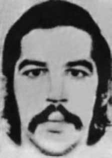

Paulo
Costa
Ribeiro
Bastos
CIRCUNSTÂNCIAS DA MORTE
Paulo Costa Ribeiro Bastos foi preso com Sérgio Landulfo Furtado em um contexto de prisões de militantes do MR-8, no dia 11 de julho de 1972, na Urca, zona sul do Rio de Janeiro. Não se sabe ao certo em que circunstâncias foram presos, pois há duas versões: uma indica que foram presos no apartamento em que residiam; outra, que conseguiram escapar e, posteriormente, teriam sido interceptados em um ônibus.
De qualquer maneira, ambos foram levados para o Destacamento de Operações de Informações – Centro de Operações de Defesa Interna (DOI-CODI) do Rio de Janeiro, localizado à rua Barão de Mesquita, na Tijuca e, posteriormente, ao CISA. Ao saber das prisões, no dia 24 de julho, as famílias de Paulo e de Sérgio passaram a procurá-los, enviando pedidos de informações a autoridades. Há diversas denúncias sobre a prisão de Paulo e Sérgio feitas por Paulo Roberto Jabour, Nelson Rodrigues Filho e Manoel Henrique Ferreira, nas auditorias militares onde prestaram depoimento por ocasião de suas prisões.
Paulo e Sérgio figuram em processo da Justiça Militar que expediu mandados de prisão para ambos no dia 7 de setembro de 1971. Apenas em 1978, por figurar como revel em um processo com Sérgio Landulfo, o então ministro do Superior Tribunal Militar (STM), general de exército Rodrigo Octávio Jordão Ramos, requereu que o desaparecimento de ambos fosse investigado, mas nada de conclusivo foi apurado.
De acordo com depoimento de Paulo Roberto Jabour, companheiro de militância de Paulo Costa Ribeiro Bastos e de Sério Landulfo Furtado, havia rumores no DOPS – onde os investigados políticos eram levados a prestar depoimento – que, em 1972, indicavam a morte de Paulo nas dependências do DOI-CODI/RJ. Até a presente data Paulo Costa Ribeiro Bastos permanece desaparecido.
Paulo Costa Ribeiro Bastos was arrested with Sérgio Landulfo Furtado in a context of arrests of MR-8 militants, on July 11, 1972, in Urca, south of Rio de Janeiro. It is not known exactly under what circumstances they were arrested, as there are two versions: one indicates that they were arrested in the apartment where they lived; another, who managed to escape and were later intercepted on a bus.
In any case, both were taken to the Information Operations Detachment – Internal Defense Operations Center (DOI-CODI) in Rio de Janeiro, located on Rua Barão de Mesquita, in Tijuca and, later, to CISA. Upon learning of the arrests, on July 24, Paulo and Sérgio's families began looking for them, sending requests for information to authorities. There are several complaints about the arrest of Paulo and Sérgio made by Paulo Roberto Jabour, Nelson Rodrigues Filho and Manoel Henrique Ferreira, in the military audits where they gave testimony on the occasion of their arrests.
Paulo and Sérgio appear in a Military Justice process that issued arrest warrants for both on September 7, 1971. Only in 1978, as he appeared as a defaulter in a process with Sérgio Landulfo, the then minister of the Superior Military Court (STM), army general Rodrigo Octávio Jordão Ramos, requested that their disappearance be investigated, but nothing conclusive was found.
According to the testimony of Paulo Roberto Jabour, a fellow activist of Paulo Costa Ribeiro Bastos and Sério Landulfo Furtado, there were rumors in the DOPS – where political investigators were taken to give testimony – which, in 1972, indicated Paulo's death on the premises of DOI-CODI/RJ. To date, Paulo Costa Ribeiro Bastos remains missing.
Paulo Costa Ribeiro Bastos fue detenido junto con Sérgio Landulfo Furtado en un contexto de detenciones de militantes del MR-8, el 11 de julio de 1972, en Urca, al sur de Río de Janeiro. No se sabe exactamente en qué circunstancias fueron detenidos, pues hay dos versiones: una señala que fueron detenidos en el departamento donde vivían; otro, que logró escapar y luego fue interceptado en un autobús.
De todos modos, ambos fueron trasladados al Destacamento de Operaciones de Información – Centro de Operaciones de Defensa Interna (DOI-CODI) de Río de Janeiro, ubicado en la Rua Barão de Mesquita, en Tijuca, y, posteriormente, al CISA. Al enterarse de las detenciones, el 24 de julio, las familias de Paulo y Sérgio comenzaron a buscarlos, enviando solicitudes de información a las autoridades. Son varias las denuncias sobre la detención de Paulo y Sérgio formuladas por Paulo Roberto Jabour, Nelson Rodrigues Filho y Manoel Henrique Ferreira, en las auditorías militares donde prestaron testimonio con motivo de sus detenciones.
Paulo y Sérgio aparecen en un proceso de la Justicia Militar que giró órdenes de aprehensión para ambos el 7 de septiembre de 1971. Recién en 1978, al presentarse como moroso en un proceso con Sérgio Landulfo, el entonces ministro del Tribunal Superior Militar (STM), general de ejército Rodrigo Octávio Jordão Ramos, solicitó que se investigara su desaparición, pero no se encontró nada concluyente.
Según el testimonio de Paulo Roberto Jabour, compañero activista de Paulo Costa Ribeiro Bastos y Sério Landulfo Furtado, hubo rumores en el DOPS – donde los investigadores políticos fueron llevados a declarar – que, en 1972, indicaban la muerte de Paulo en las instalaciones del DOI-CODI/RJ. A la fecha Paulo Costa Ribeiro Bastos sigue desaparecido.